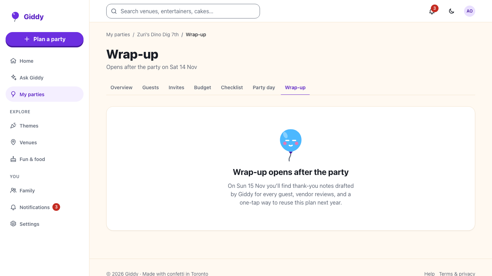
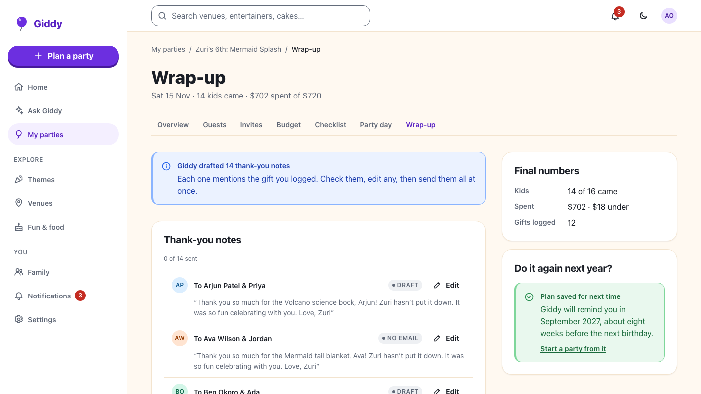
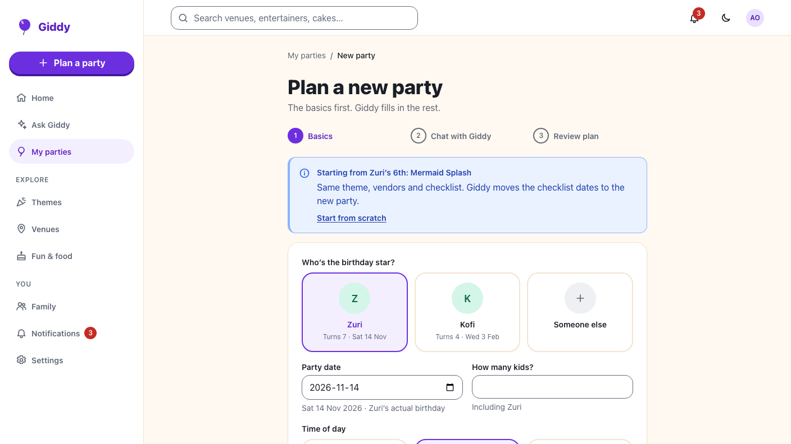

Giddy · Video 15
Wrap up after the party
Thank-yous, ratings, final numbers and next year
Thank-yous, ratings, final numbers and next year

A note per guest who came; a gift updates the draft; sent once by email.
Only booked businesses; reviews optional; 14 of 16 kids, $702 of $720, 12 gifts.


Opening, drafts and gifts, sending once, ratings that count, final numbers, saved plans, reminders, permissions, deletion.
Wrap-up, both dialogs, viewers, an emptied note, reuse from the overview, axe at 360 and 1280 px.
From the first idea to the last thank-you